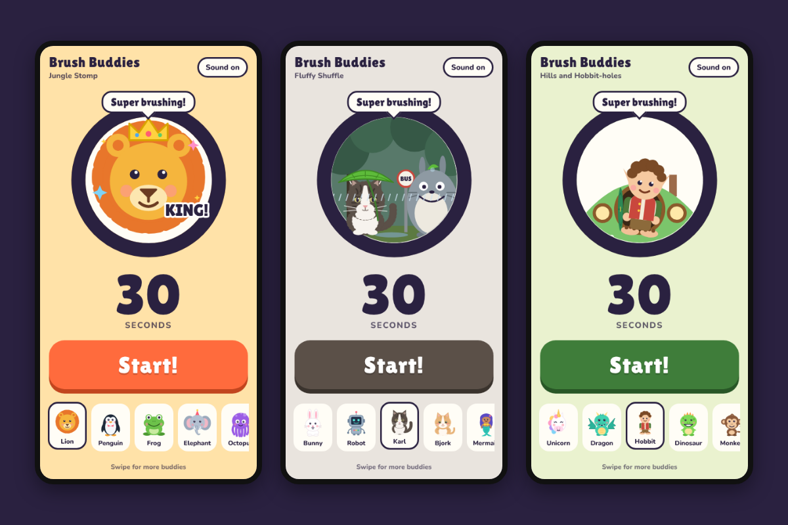

2026-11-22
A toothbrush timer I made for my kids. Pick a buddy, tap the big Start button, and it dances to its own theme tune for 30 seconds while the kids brush.

What It Does
A ring counts down the 30 seconds around the buddy. Three times during each brush the buddy does a random trick, with a speech bubble cheering the brushing on, and at the end there is a fanfare and confetti.
There are 17 buddies, including our two cats, Karl and Bjork. Karl is the favourite: he turns into a furry sausage, waits at a rainy forest bus stop with a leaf umbrella, catches a cat bus, eats peas and wakes everyone up at 4am for food.
Features
- 17 buddies, each with its own original theme tune and dance
- Nearly 80 tricks, from a hatching dinosaur egg to a hobbit vanishing with a magic ring
- Tap the buddy any time for a bonus trick
- All music and sound effects are made in the browser with the Web Audio API, with no audio files
- The screen stays on while the timer runs
- Works offline as an Android app, built by GitHub Actions on every change
Try It
The app is live here: Brush Buddies
Android app: download the latest APK
Source code: Brimbles/brush_buddies